通过Redis的集群，我们可以实现多个Redis节点之间的数据共享，并且支持自动分割数据到不同的节点上。在集群过程中通过主从的分配可以提高Redis的可用性，不会因为某个节点宕掉或者不可达而导致整个集群网络的不可用。Redis 3.0版本后支持使用Redis-Cluster来搭建集群，本文将介绍在Ubuntu 16.04下从零开始搭建Redis集群。因为Redis集群中至少应该有奇数个主节点，所以本文将创建6个Redis节点，其中3个为主节点，3个为从属节点，用于从主节点拉取数据进行备份。
安装Redis
从https://redis.io/download上获取最新的Stable版本Redis，下载到/usr/local/目录下并解压：
1 | wget http://download.redis.io/releases/redis-4.0.9.tar.gz |
进行编译和安装：
1 | cd redis-4.0.9/ |
安装成功后开始进行集群搭建。
搭建集群
编译安装后，在Reids的src目录下有个redis-trib.rb文件，将其复制到/usr/local/bin/目录下，方便后期搭建集群使用： 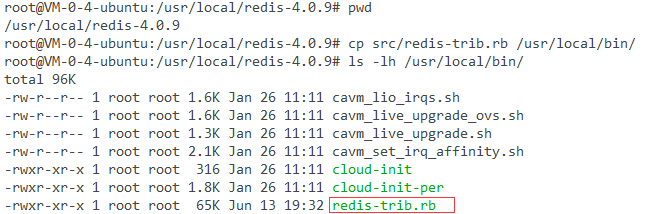
接下来开始创建节点。在redis目录下创建一个cluster目录：
1 | mkdir cluster |
然后在该目录下创建六个目录，分别命名为7000、7001、7002、7003、7004和7005：
1 | cd cluster/ |
在7000目录下创建一个Redis配置文件redis.conf，内容如下：
1 | port 7000 |
上述配置是开启Redis集群的最简配置，各项配置的含义如下：
port 7000：Redis节点的端口号为7000；
bind 172.16.0.4：绑定本机的IP地址；
daemonize yes：以后台服务的形式开启Redis；
pidfile /var/run/redis_7000.pid：以该配置启动Redis后将在/var/run/目录下创建一个redis_port.pid文件；
cluster-enabled yes：是否开启集群，yes；
cluster-config-file nodes_7000.conf：集群配置文件，启动后自动生成，文件名称为nodes_7000.conf。该文件将保持集群配置信息，以保证重启该Redis节点后能够保持集群状态；
cluster-node-timeout 15000：请求超时时间，默认为15秒；
appendonly yes：是否开启aof日志，开启后每次写操作都记录一条日志。
剩下的7001~7005的配置文件除了端口号改为相应的外，其他配置保持一致。配置好7000~7005端口的Redis配置文件后，启动这些节点：
1 | redis-server cluster/7000/redis.conf |
查看是否启动成功：
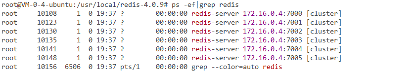
现在我们已经有了6个正在运行中的Redis实例，接下来我们需要使用这些实例来创建集群。接着使用redis-trib.rb创建集群，该文件使用ruby编写，所以使用redis-trib.rb之前得先安装ruby：
1 | apt-get install ruby |
安装好ruby后，输入以下命令开启集群：
1 | redis-trib.rb create --replicas 1 172.16.0.4:7000 172.16.0.4:7001 172.16.0.4:7002 172.16.0.4:7003 172.16.0.4:7004 172.16.0.4:7005 |
选项--replicas 1表示我们希望为集群中的每个主节点创建一个从节点，之后跟着的其他参数则是这个集群实例的地址列表：3个主节点（Master，即7000~7002）3个从节点（Slave，即7003~7005）。输入该命令后，终端打印出如下配置：
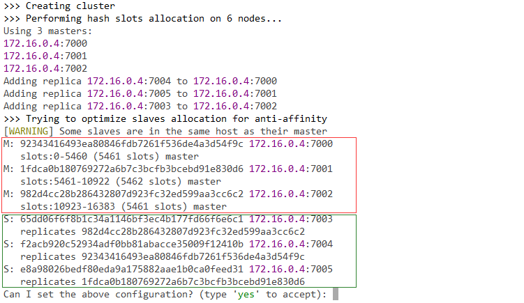
其中M开头的节点为主节点，S开头的为从节点。从从节点的replicates（复制的意思）信息可以看出7000的从节点为7004，7001的从节点为7005，7002的从节点为7003。确认无误后输入yes点击回车继续：
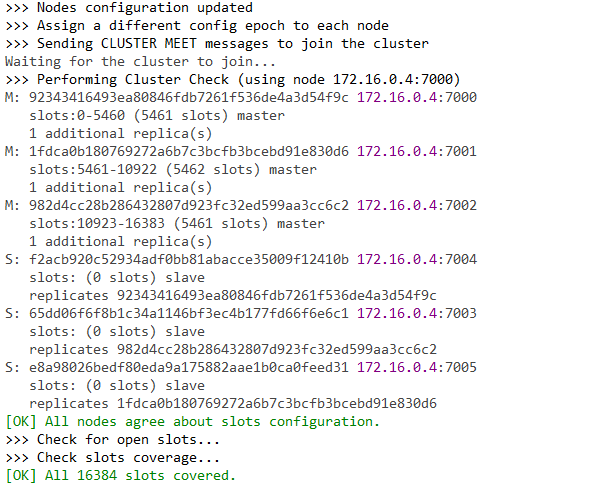
可看到7000节点的拥有5461个哈希槽（0 - 6460 slots），7001节点拥有5462个哈希槽（5461 - 10922 slots），7002节点拥有5461个哈希槽（10923 - 16383 slots），而从属节点并没有分配哈希槽。
从最后一行的输出信息可以看出，Redis集群总共有16384个哈希槽（slots）。
此外，那些一大串的字符称为节点ID。
集群测试
通过上面的集群配置，这6个Redis节点之间的关系可以用下图表示：
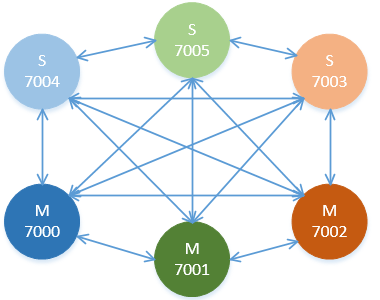
颜色深的节点为颜色浅的节点的主节点，所有节点彼此之间互联（ping-pong）。下面对这些集群节点进行一些测试。
测试存取
使用客户端连接集群后的Redis节点需要带上-c标识，比如现在我们连接端口为7003的从节点：
1 | redis-cli -h 172.16.0.4 -c -p 7003 |
使用set命令往Redis存入一些key-vaue，结果如下图所示：
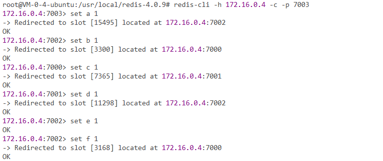
可发现，存值的操作并不是在7003节点完成的，存值的过程只在主节点下完成，并且每次set操作Redis都会输出Redirected to slot [xxxx] located at的提示。Redis集群有16384个哈希槽，每次set key时，Redis内部通过CRC16校验后对16384取模来决定放置哪个哈希槽。正如上面所说的，集群的每个主节点负责一部分哈希槽。
比如第一条命令set a 1计算出来的哈希码为15495，介于11001到16384之间，所以便存储在了7002节点中。
上面我们提到7000节点的从节点为7004，下面来验证一下：
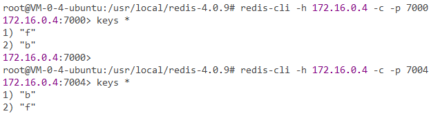
可看到它们存储的key是相同的。尝试从7004节点删除key：
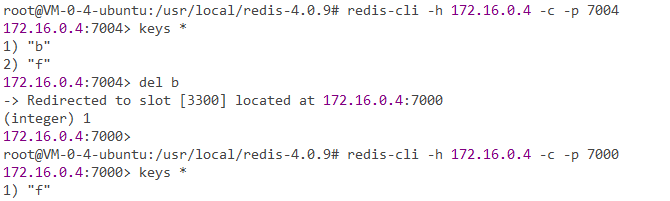
发现7000节点的b也被删除。
接下来从7000节点获取a的值（a存储在7002节点中）：
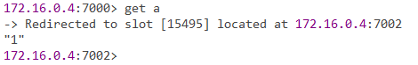
可看到Redis自己redirected到了7002节点获取a的值，这就是集群的特点，每个节点都是平等的，可以相互间取值。
测试主从
开头说过，在集群过程中可以通过主从的分配来提高Redis的可用性。比如这个例子，集群有7000、7001和7002 3个主节点，如果这3个节点都没有从节点，假设7001宕机了，那么整个集群就会因为缺少5501-11000这个范围的哈希槽而变得不可用。
所以我们在集群建立的时候，一定要为每个主节点都添加了从节点, 比如像上面的例子那样，集群包含主节点7000、7001和7002以及从节点7003、7004和7005, 那么即使7001宕系统也可以继续正常工作。
当7001这个主节点宕机后，Redis集群将会选择7001的从节点7005作为新的主节点以确保集群正常的工作。当重新启动7001后，其自动变为了7005的从节点，角色完成了转换。
为了验证这个理论，下面将7001节点杀死，然后观察：
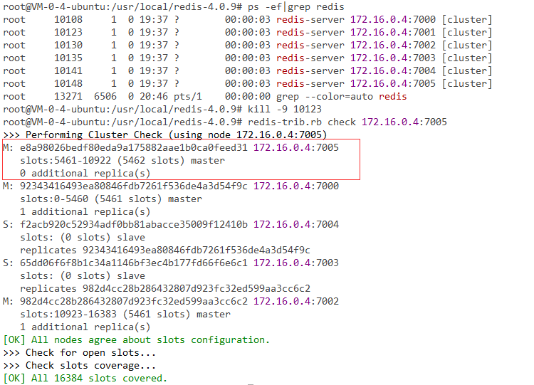
可看到7005已经晋升为了主节点。接着测试从7000节点获取c的值（c存储在7001节点中，7005之前为7001的从节点，所以也存有这个值）：
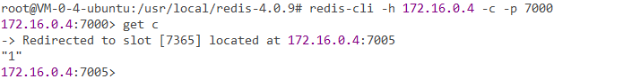
Redis自动redirected到了7005，并成功获取到了c的值。
现在重新启动7001节点，然后观察：
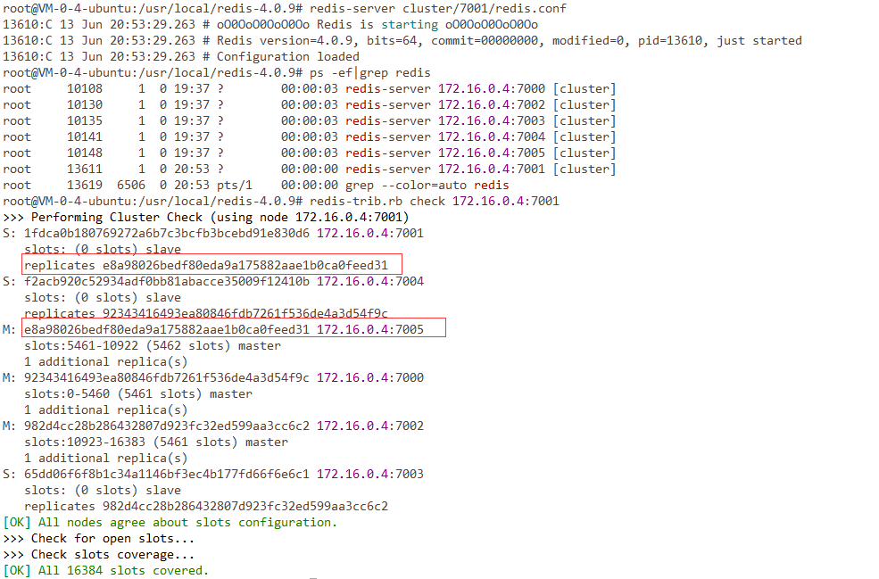
7001已经成为了7005的从节点了。
值得注意的是，假如7005和7001同时宕机，那么集群将不可用。